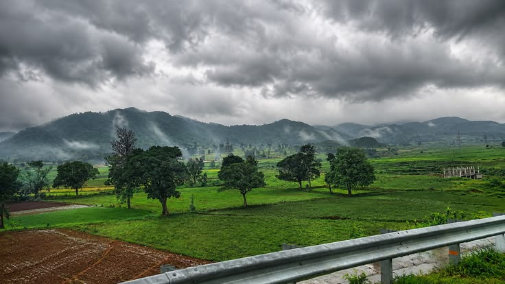

About Araku Valley
Araku Valley is a beautiful hill destination in Andhra Pradesh, located near Visakhapatnam. It is famous for its green mountains, valleys, coffee plantations, and peaceful natural surroundings.
Araku Valley is a popular destination for people who enjoy nature, photography, sightseeing, and mountain scenery.
Photo Gallery

